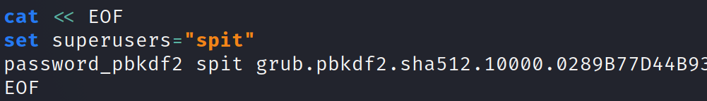

Hardening de Grub¶
Le service OpenSSH est le point d”entrée principal de notre système Linux. Il est donc primordial de durcir ce service.
Classification¶
Niveau ANSSI : intermédiaire
Bootloader
Authentification
Procédures¶
Verrouillage de GRUB¶
Faisons en sorte qu”un mot de passe soit requis pour accéder au bootloader.
Générons d”abord le mot de passe (protégé par PBKDF2) :

Modifions ensuite la configuration de grub (dans /etc/grub.d/00-header)

Effectuons un update de grub :

Vérifions qu”une authentification est bien requise pour accéder au bootloader :